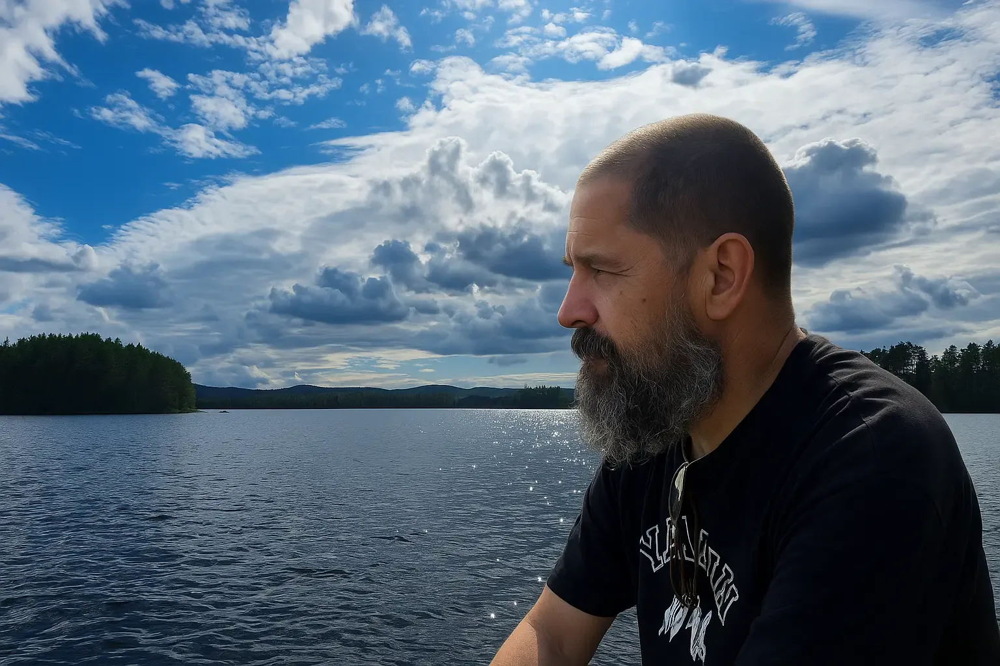
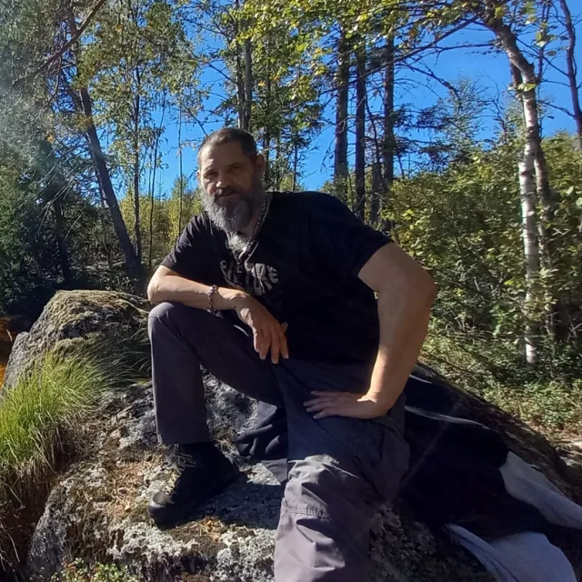
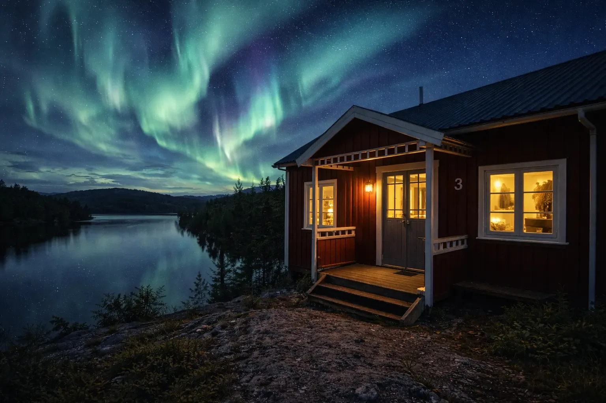

Direkt kommunikation
Du pratar med personen som besöker fastigheten och utför arbetet. Färre överlämningar innebär färre missförstånd.



OM NICO ON POINT SERVICES
Nico on Point Services bygger på en enkel idé: när något behöver göras, kontrolleras eller lösas i Värmland ska du veta vem som faktiskt kommer att vara på plats.
PERSONLIGT & PRAKTISKT

Med Lesjöfors som bas hjälper Barbara och jag husägare, fritidshusägare, köpare och småföretag med praktiska arbeten. En pålitlig lokal kontakt gör det enklare att ordna det som behövs, även när du inte själv är i Sverige.
Jag fokuserar på reparationer, installation, tekniskt underhåll, huskontroller och praktisk samordning kring uthyrning. Barbara hjälper till med underhåll och skötsel av fritidshus och ansvarar för privata middagar. Våra insatser kompletterar varandra, med personlig omsorg om både huset och dem som vistas där.
Vi tänker praktiskt, kommunicerar tydligt och kommer överens om arbetet i förväg. Vi är ärliga om vad vi kan utföra själva och när en behörig specialist behövs. Genom mitt nätverk kan jag hjälpa till att hitta rätt yrkespersoner.
SÅ ARBETAR VI
Du pratar med personen som besöker fastigheten och utför arbetet. Färre överlämningar innebär färre missförstånd.
Vi söker förnuftiga lösningar som passar huset, situationen och budgeten utan att göra små problem onödigt komplicerade.
För ägare och köpare på distans gör foton och korta uppdateringar det lättare att ha kontroll utan att vara på plats.
De flesta praktiska arbeten kan jag utföra själv. Om en del av uppdraget kräver särskild behörighet eller certifiering diskuterar jag det i förväg och kan genom mitt nätverk anlita rätt yrkespersoner och sköta den praktiska samordningen.

BASERAD I VÄRMLAND
Många av tjänsterna är användbara för personer som bor någon annanstans och äger, hyr ut eller överväger att köpa fastighet i Sverige. En lokal kontakt kan besöka, kontrollera, fotografera, samordna och lösa mindre problem innan de växer.
Vi utgår från Lesjöforsområdet och tar uppdrag i Värmland och, beroende på uppdraget, även utanför området.

VI ARBETAR TILLSAMMANS
Barbara hjälper till med underhåll och skötsel av fritidshus och ansvarar för privata middagar. Hon ordnar middagar på plats som en extra service som fritidshusägare kan erbjuda sina gäster.
Se erbjudandet för privata middagar →KOMMUNIKATION
Kommunikationen fungerar bäst på nederländska, engelska och tyska. Enkel praktisk kommunikation går också bra på svenska, italienska, franska och spanska.
OSÄKER PÅ VILKEN TJÄNST SOM PASSAR?
Några bilder, platsen och en kort beskrivning räcker oftast för att börja.